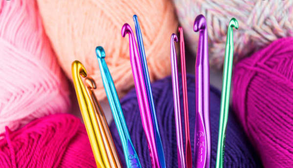
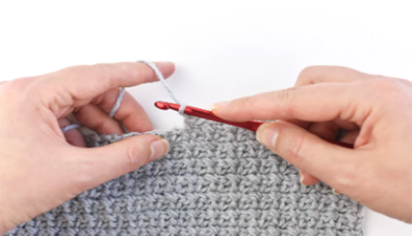
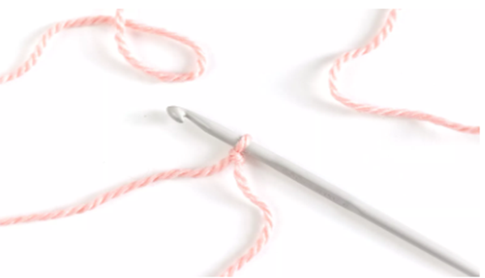

Reasons to Crochet
Crochet has a naturally calming effect. Engaging in a repetitive activity provides a distraction for the mind by focusing on the actions of your hands, without needing to really think about what you are doing. This alone can help release physical tension and reduce feelings of anxiety.

Choosing Crochet Hooks
Choosing the right crochet hooks for your project is important.
Crochet with Tuula

How To Hold A Hook & Yarn
Mastering the hold of the hook and yarn can be difficult. Here's helpful giude.
Yarnspirations

Slip Knots & Chains
A slip knot is the first step in all crochet projects and chains are the foundation.
Lion Brand